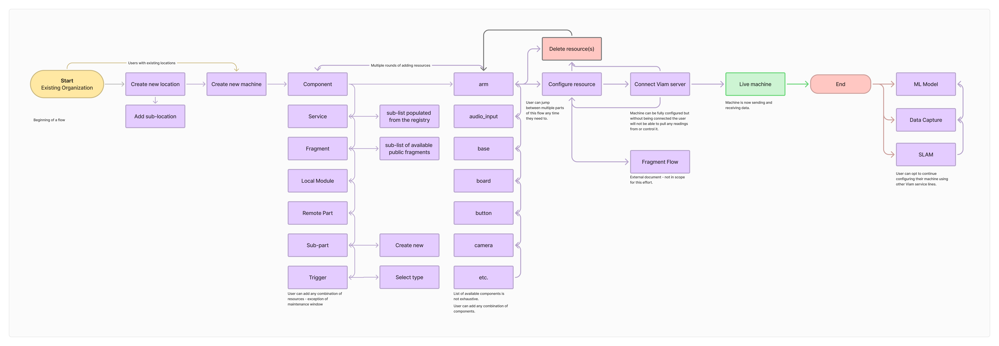
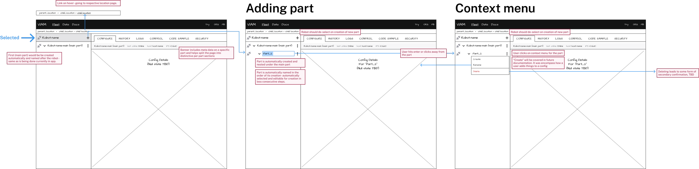

VIAM Machine Configuration
Unlocking data & AI in the physical world
Overview
Viam has been working since 2019 to create a new standard for hobbyist developers developers to Fortune 500 businesses to configure, launch, control, and monitor their fleets of IoT and robotic devices.
To leverage the full power of Viam’s ecosystem of products, from data aggregation, machine learning models, and a registry of compliant components, users need a way to efficiently configure and test their new smart machines. Machine configuration acts as the core of the VIAM platform which other product services such as Fleet Management, Data, Machine Learning, & Registry derive their ecosystem level value from.
Challenges
- Design/technical debt
Years of features needed consolidation.
- Usability
Developer tooling needed familiar UI patterns.
- Fragmented flows
Creation/configuration processes were disjointed.
Success Metrics
- Increased enterprise adoption
- Reduced configuration time for solutions engineers
- Incorporated familiar developer UI patterns
Research & Competitive Analysis
We studied leading platforms like ROS, Cogniteam, Intrinsic, ArduinoWeb, and VSCode. Insights included:
- File trees: Essential for navigation
- Flexible IDE layouts: Users expected customization
Key Insights
- File-tree navigation is essential: Developers expect to see a structured, nested view of machine components, similar to IDEs or JSON structures they're familiar with.
- Configuration needs to be readable and editable: Users wanted clear machine definitions they could read at a glance — and the flexibility to edit settings inline or via raw JSON when needed.
- Separation of setup and operation is critical: Many platforms confuse configuration with live control. Users wanted to configure safely before deployment — not while the robot is running.
- Familiar UI patterns reduce ramp-up time: Competitor tools like ROS and Intrinsic often rely on complex CLI tools or XML files. Viam’s web-based UI had an opportunity to stand out with familiar UI/UX conventions.
- Debugging needs to be integrated: Users expected to see real-time logs, validation warnings, and machine state summaries during configuration to reduce guesswork and deployment errors.
Design Process
Flow Mapping

Aligned with stakeholders to streamline the machine creation process into fewer, more intuitive steps.
Wireframing

Built early low-fidelity wireframes to test ideas. Ensured scalability for complex machine setups and allowed editing/refinement mid-flow.
UI System Integration
Extended and migrated the PRIME design system to support the new UI patterns needed for machine configuration.
Key Features
- Tree navigation: Manage machines and sub-parts easily
- JSON editing: Granular configuration through direct code
- Null states: Friendly guidance for new users
- Logs: Real-time diagnostics and feedback
- Connect tab: Auto-generated boilerplate for quick integration
Outcomes
- $117M raised, including a $30M Series C
- 40+ partnerships and 2,750+ developers
- 23,000+ machines created
- 65% reduction in configuration time
Reflections
This project delivered measurable success. It reduced engineering support load, improved user confidence, and helped close deals with Tennibot and the Billion Oyster Project. A phased launch and earlier design system alignment could have accelerated delivery.
Try Viam →